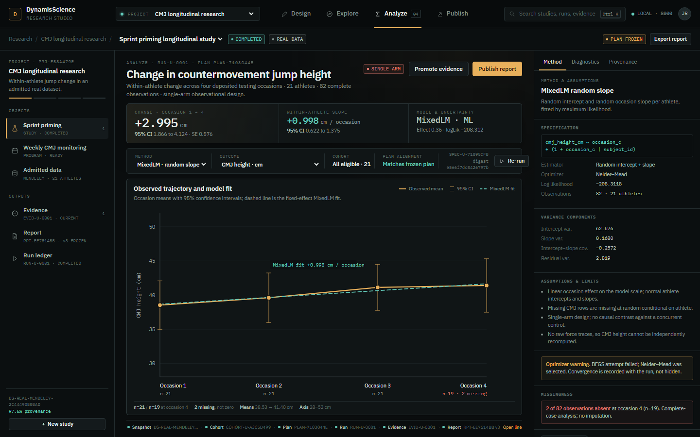
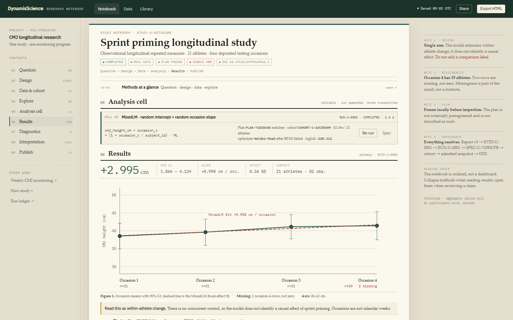
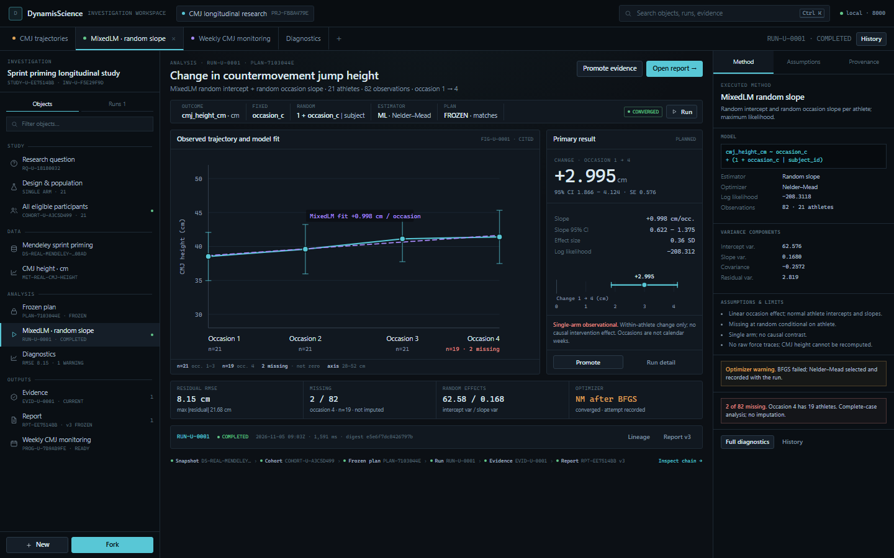
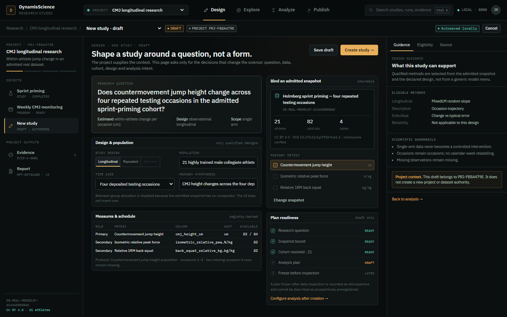
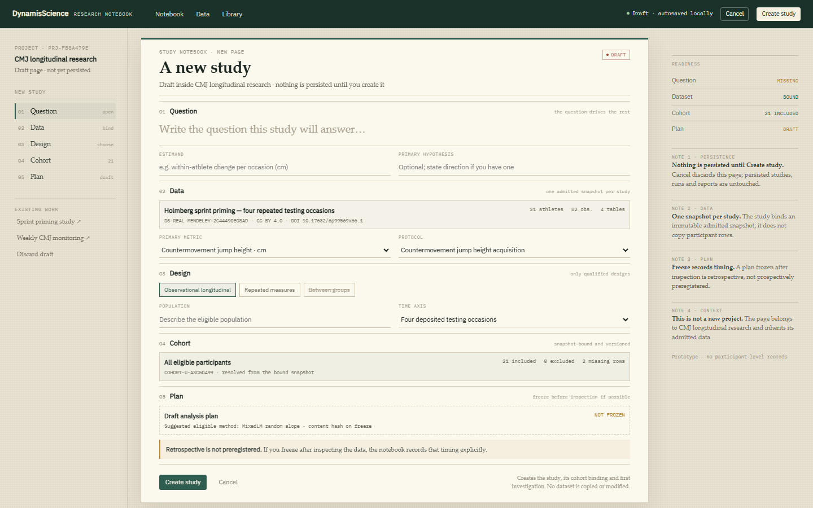
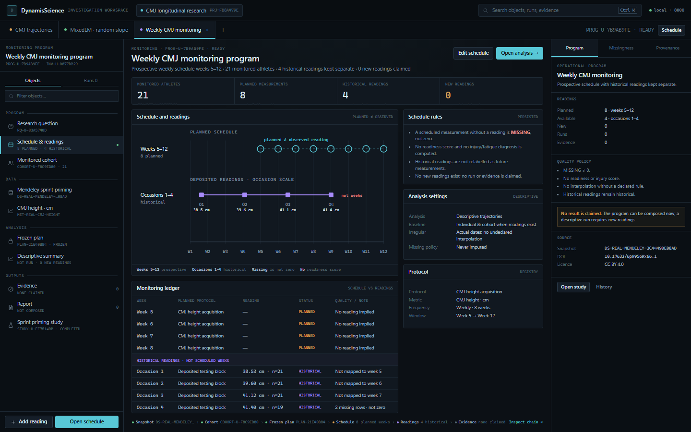
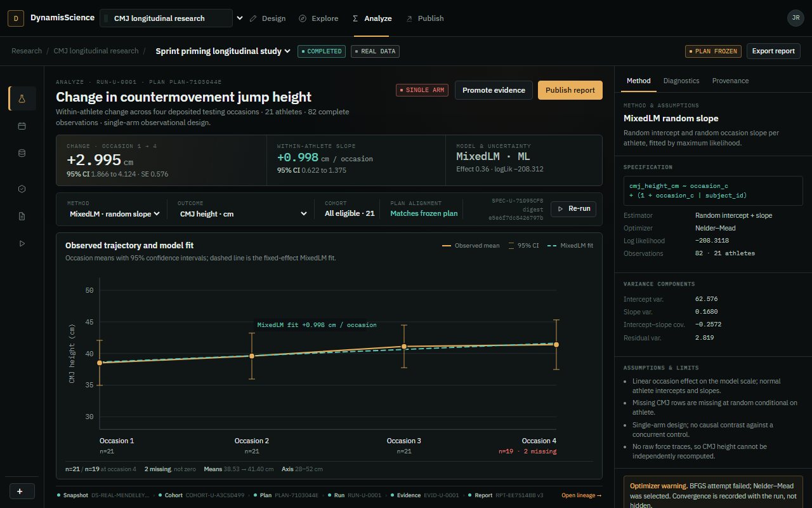
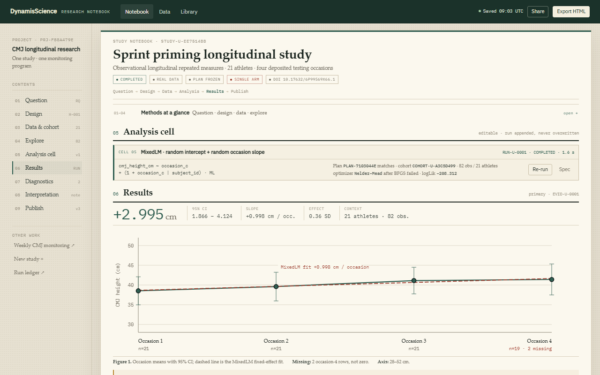
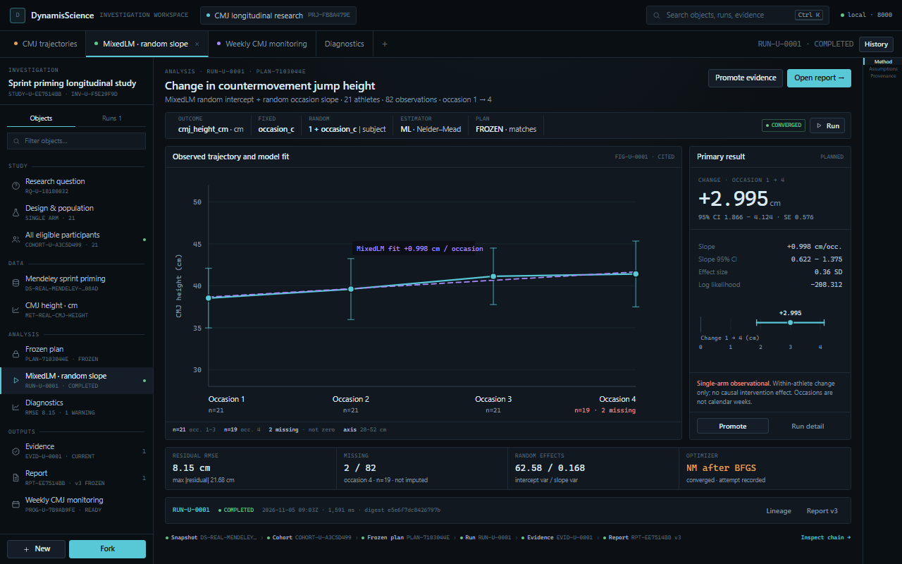
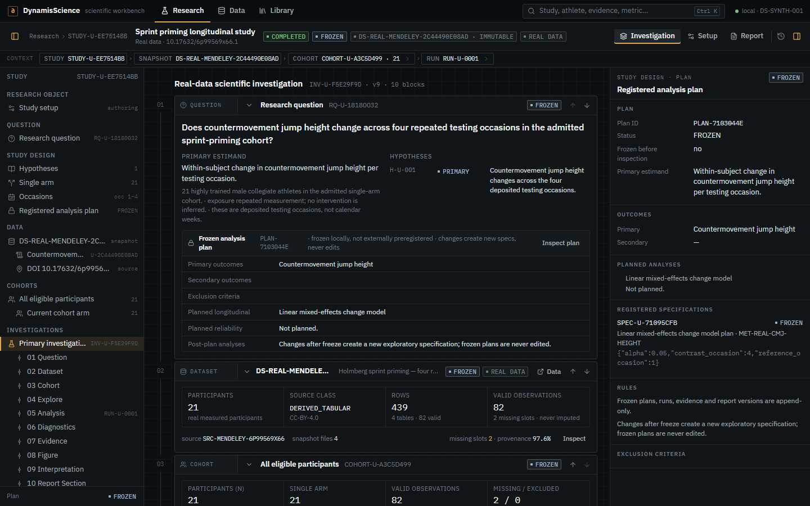

RES-588 · P0 UX/UI product reset · Step B design gate
Three directions for the same research studio
Same real study: Sprint priming longitudinal study · 21 athletes · 82 observations · MixedLM random slope +0.998 cm/occasion (95% CI 0.622–1.375). These are isolated, read-only prototypes rendered at the required desktop viewports. No production UI was modified.
Open the owner-requested synthesis: Direction D — The Research Atelier →
1440 × 900 — flagship study and second view
Image width 720 px per panel · aggregate values only

A · Focused Research Studio — AnalyzeProject context, four activity modes, result first, 784 × 405 px chart, contextual scientific inspector.

B · Scientific Notebook — ResultsOrdered research narrative, collapsible methods, full-width 834 × 310 px figure, persistent contents and margin notes.

C · Investigation Workspace — AnalyzeResearch-object navigator, open-object tabs, 594 × 338 px chart, result panel and contextual instrument tray.

A · Design — create a studyOne design canvas with question, data, design, readiness and project context; no wizard sprawl.

B · Notebook — new studyA blank study page authored as ordered cells; methods and plan remain collapsible.

C · Monitoring — weekly CMJEight planned weeks and four historical readings kept in separate lanes; no readiness or injury score.
Real values: occasion means 38.53 → 41.40 cm; model change +2.995 cm [1.866, 4.124]; 2 missing occasion-4 rows. No participant-level records are included.
1280 × 800 — compact treatment
Charts remain large; navigation degrades deliberately

A · 1280 × 800236 px rail becomes a 70 px icon rail; chart 832 × 307 px; inspector 312 px.

B · 1280 × 800Margin notes fold away; figure stays full width; contents rail narrows.

C · 1280 × 800Instrument tray becomes a 56 px rail; chart grows to 732 × 360 px.
Current production vs Direction A — the same first screen
Structural difference, not a restyle

Current production · first screenSetup metadata and plan cards occupy the viewport; the primary figure begins 3,151 px down. 256 px tree + 356 px inspector leave 828 px for work.
Direction A · first screenResult and 784 × 405 px chart are visible without scrolling; methods, assumptions and missingness stay inspectable in the right dock.